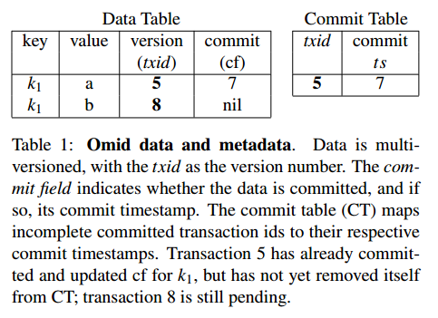

摘要：分析了 Omid 分布式事务在一些细节上的设计思路和取舍。
转载或者引用本文内容请注明来源及原作者
背景
Yahoo 需要一种可扩展、可靠且能提供 ACID 语义的分布式事务服务。
条件和约束
- 兼容多种 NoSQL kv 存储（当前基于 HBase），这点和 Percolator 类似，后者基于 Bigtable
- 简单（部署、维护、监控）
- 支持跨行、跨表的事务，为了高扩展性，提供 SI 隔离级别的 ACID 语义
- 高可用
技术点
- 中心化的 transaction manager (TM)，负责时间戳分配、事务状态记录以及并发冲突检测
- 在 HBase API 上非 “侵入式” 地实现
- lock-free 的并发控制机制，无需考虑死锁检测的问题
系统设计分析
同 Percolator 相同，底层存储层本身提供了数据持久化、可扩展性以及高可用，因此 Omid 只需要提供分布式事务的功能。
分布式事务状态记录
和 Percolator 相同的是 Omid 的事务状态记录在 Hbase 上，直接利用了底层数据层的扩展性和可用性，不同的是 Percolator 将事务状态分散记录到每个事务 primary 节点的 tuple 上，而 Omid 的事务没有设计类似 primary 的概念，因此需要专门的表 Commit Table（CT）负责记录。
类似地，Omid 也通过在数据表上开启特殊列记录事务的元数据非侵入式地实现事务，包括事务 id 和 commit_ts（lock-free 的并发控制，所以没有 lock），如下图：

其中的 cf 列和 Percolator 中的 c:write 相同，优化事务可见性查询的效率，允许后续事务查询 CT 后延迟更新。一旦事务设计的所有 tuple 的 cf 更新完毕，Commit Table 中相应的条目就可以清除了。
时间戳分配和不确定状态事务的处理
和许多分布式事务方案一样，Omid 采用了中心化纯逻辑时钟的分配方案，在事务开始时向 TM 申请 read_ts，提交时申请 commit_ts。不过不同的是，Omid 在时间戳分配过程中就解决了不确定状态的事务的处理问题。
不确定状态的事务，指的是某个事务 T2 在读 tuple 时，不确定 tuple 涉及的事务 T1 是否已经提交的情况，其中的 T1 就是不确定状态的事务。在 Percolator 一文中提到过两种方法，一种是 “被动” 等待 tuple 涉及的事务结束并通知到 participant 上的事务 T2，另一种是像 Percolator 一样 “主动” 去事务状态的记录节点查询事务状态。
Omid 针对不确定状态的事务的处理采用的也是 “主动” 向 CT 查询事务状态，如果 CT 记录了事务 T1 已经提交，那么当前事务 T2 帮忙 roll forward 更新 tuple 上的 commit 列。和 Percolator 不同的是，如果 CT 没有查到T1 的事务状态，这时虽然事务 T1 没有提交，但是有可能已经拿到了 commit_ts，且小于当前事务 T2 的 read_ts，Percolator 选择 abort T1，而 Omid 选择不让这样的场景发生：推迟 T2 的开始，直到 T1 结束（包括完成更新 CT）。
这样对于事务可见性判断就简单了：
如果 CT 中查不到 T1 的提交状态，那么 tuple 一定不可见
当 T2 向 TM 申请 read_ts（和 txid 等价）时，TM 会确保所有 pending 事务中 commit_ts 比待分配 txid 小的事务结束后（commit/abort）才能返回 txid，伪代码如下：
1 | // TM |
那么显而易见，TM 必须要知道每个事务的状态才能判断是否要等待事务完成，不愿引入额外的通信开销的话，TM 就要负责事务状态记录（更新 CT），这也解释了为什么 Omid 会把更新 CT 的工作也交给 TM 做的原因，伪代码如下：
1 | // TM |
client 端对事务可见性检查的逻辑就比较简单了，如果 tuple.commit 不为空，和 read_ts 比较判断可见性，如果为空，查 CT，存在则继续判断可见性，不存在则不可见。但是注意，这里存在一个竞争条件，当发现 tuple.commit 为空后，查询 CT 为空，有可能存在另一个事务在这两个操作之间更新了 tuple.commit 并删除了 CT 中的记录，所以查询 CT 为空后，要重新查询下 tuple.commit 是否还为空，如果为空就说明事务没提交，以不可见处理。伪代码如下：
1 | // client |
关于等待粒度的思考
Omid 让事务在取 read_ts 时等待所有已经分配 commit_ts 的事务结束，虽然方便了事务可见性检查，但是等待的粒度其实是很大的。假设 T1 修改的不是 T2 正在读的 tuple，那么 T2 在不涉及查询 T1 状态的前提下还要等待 T1，这显然是没有必要的。
讨论如果将等待的粒度减小到 tuple 级，那么 T2 的等待一定不会发生在 TM 分配 read_ts 的时候，而会发生 T2 执行时读 tuple 的时候，由于查询到 CT 没有事务 T1 的提交状态，又不确定 T1 是否申请了 commit_ts，那么就等待在 tuple 上，直到 T1 结束。这其实就是 pgxc 的方案，等待的粒度小很多，但也可以看到，如果 T1 此时没有申请 commit_ts，等待同样是没有必要的。
有没有可能完全避免不必要的等待？
对于这个问题的思考会另起一篇文章
lock-free 并发控制
SI 隔离级别的实现，需要解决写-写冲突，即保证被写的 tuple 在 read_ts 和 commit_ts 之间没有被其它事务修改。和 Omid 相同，Percolator 也是基于 OCC 的并发控制，为了实现 SI 隔离级别，Percolator 在 validation 过程（prepare 流程）中利用单行原子读改写保证了 tuple 没有写-写冲突后，对 tuple 加了锁，并且，只有当事务涉及的所有写 tuple 都加上锁后才能进行 commit 流程，申请 commit_ts，冲突检测保证了加锁前 tuple 没有被改，对 tuple 加锁又保证了在事务真正提交前其它事务无法对 tuple 修改。
因为 Percolator 通过加锁防止写-写冲突，所以数据的更新可以推迟至 validation 的时候，事务执行时只需将写数据写入 client（也是 coordinator）的本地缓存。
如果 validation 的时候不加锁，能不能实现 SI 隔离级别？
Percolator 之所以加锁的原因在于即便某个 tuple 在 validation 是没有发现写-写冲突，但不能保证此时到申请到 commit_ts 之间没有其它事务以大于 read_ts 的 commit_ts 修改了这个 tuple。那么换个思路，如果事务 T 先申请 commit_ts，再做 validation + 写数据（携带 commit_ts，但要和已提交事务的 tuple 区分开，并且 validation 和 写数据是原子的），只要通过冲突检测（数据更新成功），任何 read_ts < T.commit_ts 的事务都无法通过冲突检测，也就不需要加锁了。
Omid 采用了类似的思路，不过做了一些调整，因为现在更新 CT 的工作被放在了 TM 上，如果 validation 在 client（coordinator）上，流程将会是：
1 | 1. client 发送 GetCommtTs 给 TM (1次msg) |
以上涉及了四次消息传递，Omid 索性将并发控制检测也放在了 TM 端，少一次消息传递，流程变为：
1 | 1. client 发送 Commit 给 TM (1次msg) |
client 发送 Commit 消息时，携带了本地写缓存，由于数据量可能很大，如果直接将数据传给 TM，相同数据需要两次经过网络，一次是从 client 传到 TM，一次是从 TM 写到 participant，为了减少数据传输，Omid 在事务执行写操作时，client 直接将数据写入 Hbase，并且本地仍然记录写缓存用于冲突检测（不携带真正的数据，只是 tuple 的标识），本地写缓存记为 write-set，通过 Commit 消息传给 TM。重新看一下 TM.Commit 逻辑：
1 | // TM |
由于冲突检测都在 TM 上做，所以就不需要在向 participant 写数据时携带 commit_ts 了。不过可能会有单点性能问题。
冲突检测
每个事务在向 TM commit 时会携带本地缓存的 write-set，TM 会维护一个 hash 表记录 <key, commit_ts>，每个 key 只需要记录最大的 commit_ts 即可。为了节省空间，每个 hash 表内每个 bucket 的大小是固定的，如果某个 bucket 满了，就一律 abort，显然如果 bucket 满了，未记录的 key 涉及的事务总是被 abort，为了缓解这种情况，在每个 bucket 上加了一个成员变量 smallestCommitTs_ 用来记录 bucket 满之后未记录的拥有最大 commit_ts 的 <key, commit_ts> 对。如果 txid > smallestCommitTs_，说明之前即便有事务改写 key 没记录，其 commit_ts 也不超过 txid，没有冲突，可以提交。
1 | Status ConflictDetect (txid, commit_ts, write-set) { |
TM 的高可用设计
TODO
如果读者对相关问题有兴趣，欢迎交流：llxmedici@gmail.com
参考资料
[1] Ohad Shacham, etc. 2017. Omid, Reloaded: Scalable and Highly-Available Transaction Processing .